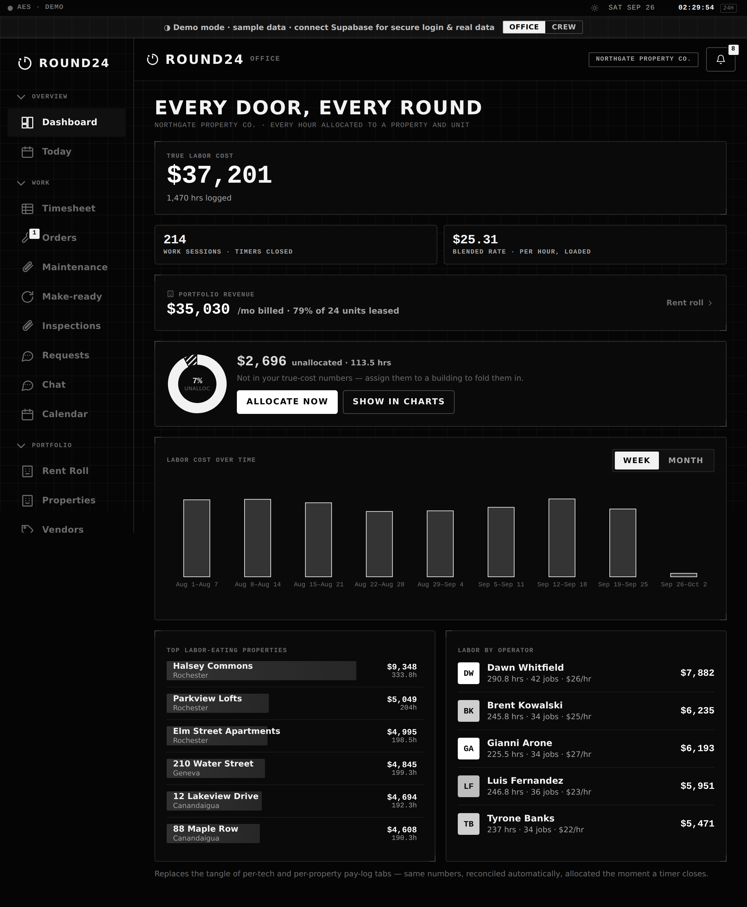
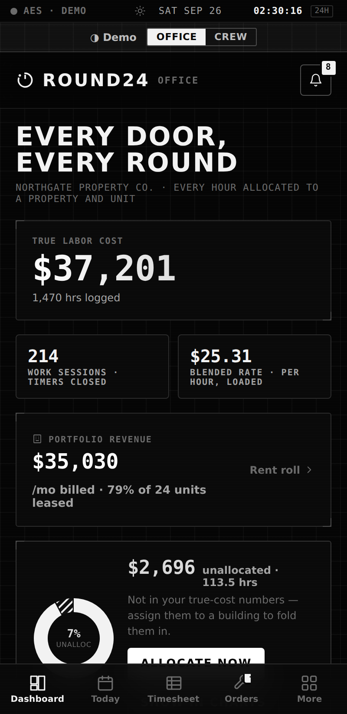
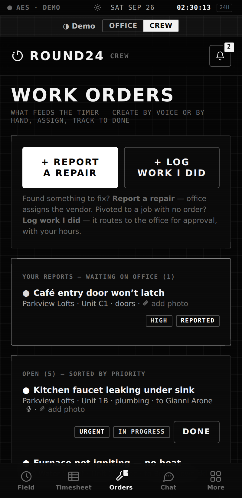
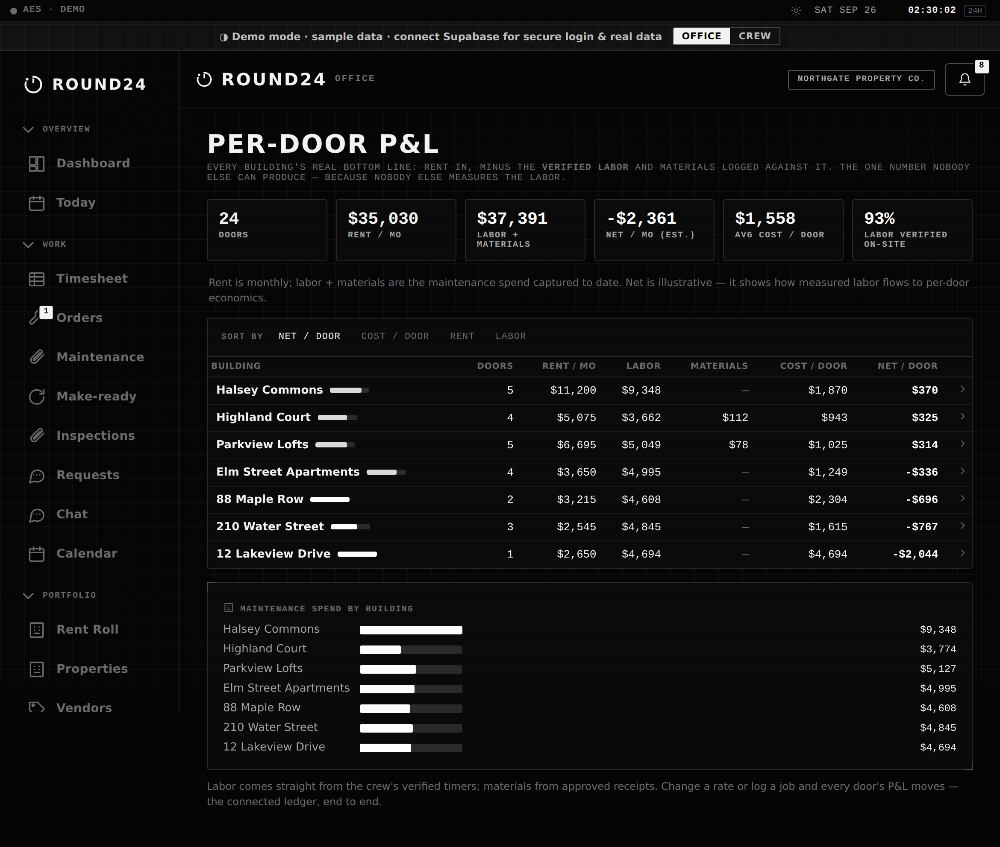
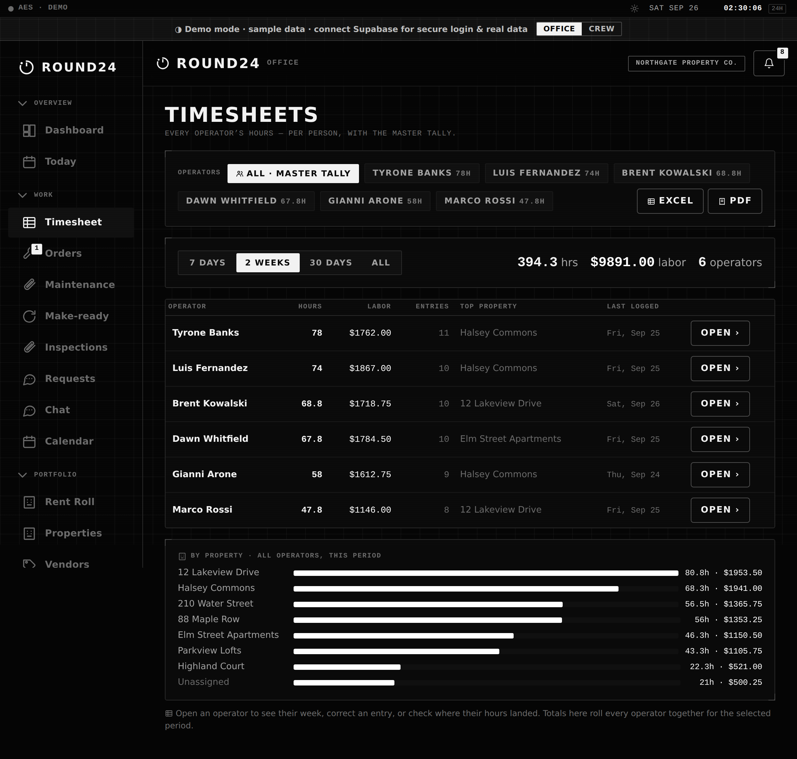
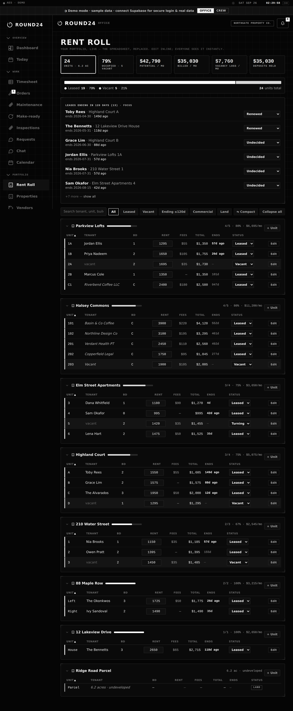

Property maintenance · around the clock
Every hour, receipt, and door — reconciled automatically. Round24 turns the pay logs, rent rolls, and P&L sheets your crew and office keep by hand into one connected, encrypted ledger — and gives your residents a way in, so the whole building runs on one system.
Labor is the biggest controllable cost in your buildings — and the one you can't see per door. When an owner asks what a unit actually cost to maintain, the honest answer is a guess. Round24 measures it.
Three steps, no spreadsheets. The crew measures, the engine allocates, the office proves.
Crews clock in with a geofenced, hands-free timer and snap receipts — real hours and materials, on the right door, not a spreadsheet after the fact.
Every hour and dollar lands on the building and unit it was spent on — the allocation engine does the math the moment a timer closes.
Per-door P&L, forecasts, and statements that assemble themselves — the one number nobody else in the category can produce.

Pro · Office dashboard · sample data
Three products share one backend, so a receipt snapped by the crew, a CAM statement for a commercial tenant, and a repair reported from a resident's door all resolve against the same rent roll.
For maintenance companies and their crews. Office dispatch, a crew in the field, and the money per door — the system of record.
For office parks & towers — many tenants, many buildings, one ledger.
For residents & tenants — report repairs and reach your building. Free with Pro.
True labor cost, weekly and monthly trend, the doors that eat the most labor, labor by operator — and a click from any chart to the entries behind it.
Who's clocked onto which job right now, crew workloads, and the orders still unassigned. Dispatch from here.
Field reports, receipts, and resident requests come in as a queue. Approve it and it hits the right building's P&L; send it back and it doesn't.
Every operator at daily, weekly, monthly, or yearly grain, on a pay period that matches yours — Saturday start included.
Voice-driven, offline-safe, one thumb. Everything the field needs, nothing the office does — and every hour arrives already allocated.
Start the timer at the door. Round24 knows which building you're standing at — verified on-site.
A priority call mid-job? Pause, handle it, come back. A multi-day job never loses a minute.
"Unit 4B, leaking faucet, tomorrow." Round24 writes the order and asks for the photo.
Photo it at the counter. OCR reads the line items; AI checks the price against the vendor.
Four buildings today? Divide the day from the stairwell — no back-office guessing.
Office ↔ crew and per-job threads. The office can summarize a thread into the work order with AI.

Crew · today

Crew · work orders
"Unit 4B, leaking faucet, for Gianni tomorrow at 301 Central" becomes a structured order — unit, task, assignee, due date, building, category.
A request from a QR on the door lands in the Requests queue already knowing its building and unit. Triage it into an order in one step.
Every order carries a chat thread and photos; the office can summarize the thread into the order with AI.
A vacant unit moves left → right until it's leased again; each stage is lost rent until it does.
Recurring work on a cadence — HVAC, inspections, turns — assigned or open, per building and unit.
Templated condition checklists, pass/fail, on the record — move-in, move-out, periodic.
Crew · work orders
Change a rate or log a job and every building's P&L moves. Labor comes straight from the crew's verified timers; materials from approved receipts.
Rent, labor, materials, and fixed overhead resolved to one statement per building — automatically.
A fixed salary spread across the doors actually worked, by hours — no lump of overhead.
See — and fix — every hour and dollar not yet tied to a door, before it hits the books.
Expense forecasts and monthly P&L statements that assemble themselves from the same entries.

Per-door P&L · sample data
The crew's running timer flows onto the sheet in real time; hours and pay compile as they accrue, and land on the building as they do.
Crew self-log on a week view; entries carry the property and unit, not just the hours.
The office sees per-operator and per-property totals at day, week, month, and year grain.
Weekly, starting the day your payroll starts — Saturday included — so payroll never disagrees.
Rate changes and mid-log overrides are kept, so history reconciles too.
Pay-period lock and payroll CSV export — locked periods immutable, corrections as audited adjustments.

Timesheet · sample data
Units, tenants, occupancy, and renewals — imported from the sheet you already keep, or synced from Rent Manager.
Every unit, tenant, lease term, and renewal; occupancy and rent math that treat land and held parcels correctly.
Per-building labor, drill to per-unit and per-category cost, unit-mix at a glance.
Lease expirations, move-ins, work-order due dates, and labor — day, week, and month together.
Certificates of insurance for vendors and tenants with expiry tracking; leases, W-9s, and house rules on one shelf.
Rent Manager read-only sync — RM stays your system of record for properties and units; Round24 owns work orders and cost.

Rent roll · sample data
Portfolio-first, with no crew or dispatch apparatus in the way. Roll-ups across the estate, an auditable operating cost per suite, and a CAM reconciliation your tenants can't argue with — because the labor behind it was measured, not estimated.
A building's measured operating cost — labor plus materials — allocated pro-rata by rentable square footage across its commercial tenants, then trued up against the CAM each was billed. Per-tenant, branded statements, print or PDF.
Editable on the rent roll, so CAM shares are exact — not a rounded estimate from last year's spreadsheet.
A branded building handbook, amenity reservations, and certificate-of-insurance tracking for tenants as well as vendors.
Residents aren't ticket submitters. Each one is bound to a unit that already exists in your rent roll, so a repair reported from a door arrives in your queue already knowing its building, unit, and owner.
Requests land in Pro's Requests queue; resident claims are verified against the lease in the Residents queue. Handbooks and amenities are authored by staff, read by residents.
Fewer nuisance tickets and after-hours calls, and residents who feel at home stay longer — which Pro already measures as make-ready labor per door.
The Excel import reads messy pay logs, rent rolls, and P&L sheets in whatever shape they're in — flags missing rates, backfills history, and stands the whole operation up as one ledger.
Any shape. Tabs that mix pay logs with service logs and inventories are exactly what the importer was built on.
Rows resolve to buildings and units; operators and rates are matched; unallocated hours are surfaced for a one-time tag, not lost.
Invite the team with role-scoped links. The crew gets field tools; the office gets the first reconciled week.
Pay rates, operator identities, and financials are encrypted at rest with keys that belong to your organization. Every read and write is scoped to your org and your role — enforced at the database, not the app.
Pay and financial fields are encrypted per org with envelope keys. Fail-closed: if a key can't be reached, nothing is shown.
Every query is scoped to the organization and role at the database. There is no cross-tenant path to write.
Contractors get field tools only; financials and the P&L are gated to the office. Invites are role-scoped from day one.
Credential expiry, contractor paperwork, and an audit trail of sensitive actions — approvals, invites, exports, renames.
· Office: dashboards & dispatch
· Crew: timers & receipts
· Team, compliance & payroll
Best if you run your own maintenance crew and want to know what every door costs to keep.
Portals: Office · Crew
· Multi-building roll-ups & dashboards
· Auditable operating cost per suite
· Measured labor across the estate
Best if you manage commercial tenants and reconcile CAM — and want the labor behind it measured, not estimated.
Portal: Estates
· Report a repair in seconds
· Follow it to done
· Hear from your management office
Best if you live or work in a Round24-run building — scan the QR on your door, or ask the office for the join link.
Portal: Residents · free with Pro
Pro and Enterprise are priced per door under management, not per quote. Community is included with Pro. Ask us for current beta pricing — and bring the workbook.
Request a beta invite, send us the workbook you already keep, and your crew clocks in on their phones. The first reconciled week does the rest of the pitch.
Screenshots use sample data — fictional company, buildings, and people. Product surfaces described are in active production use unless marked in progress or next. Private beta · AES-256 encrypted.